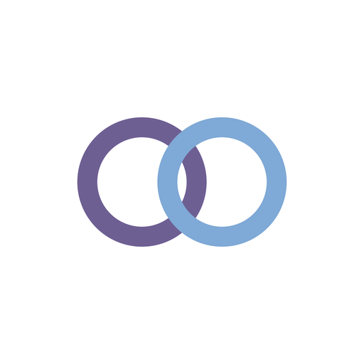

ourlyEnglishOurly hesabınızı silin
Ourly · Nevermiss Studio
Uygulamadan (hemen)
- Ourly'yi açın ve sağ üstteki ayarlar düğmesine dokunun.
- En alta inin ve Her şeyi sil'e dokunun.
- Onaylayın.
Hesabınız, içinde bulunduğunuz eşleşme ve onunla paylaşılan her şey sunucumuzdan hemen silinir; telefonunuzdaki uygulama da temizlenir.
Neler silinir
- Anonim hesap kimliğiniz ve bildirim jetonunuz
- Eşleşmeniz, iki açık anahtar ve ikinizin paylaştığı tüm şifreli öğeler
- Açık bir davet kodu varsa o da
- Telefonunuzdaki uygulamada saklanan her şey
Sonrasında hiçbir şey saklanmaz. Google Play üzerinden yapılan satın almalar, Google'ın tuttuğu Google hesabı satın alma geçmişinizde kalır; aboneliği durdurmak için Google Play'den iptal edin.
Uygulama artık sizde değilse
Ourly'nin Google Play sayfasındaki iletişim e-postasına yazın. Hesaplar anonim olduğu için uygulamayı kaldırmak da verilerinizi erişilemez kılar: telefonunuzun anahtarı olmadan şifreli öğeleri kimse açamaz. İstediğinizde hesabınızı ve verilerinizi sileriz.